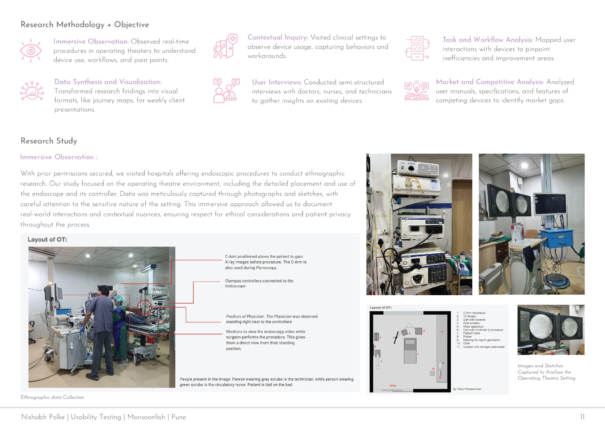
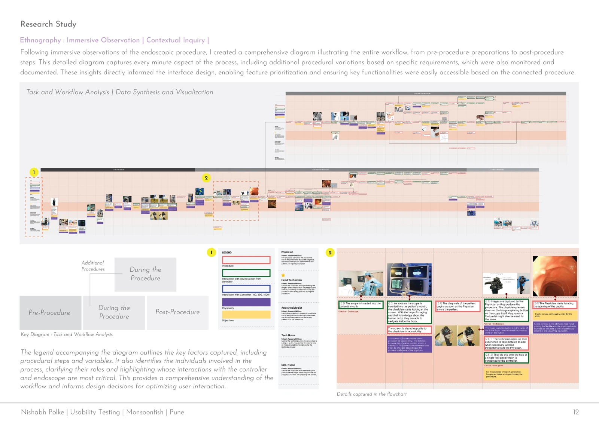
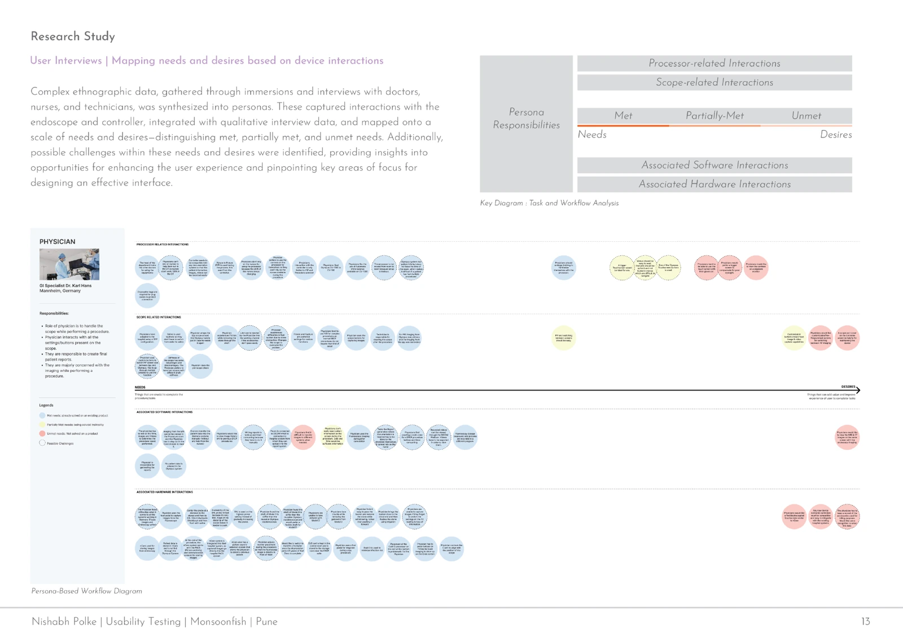
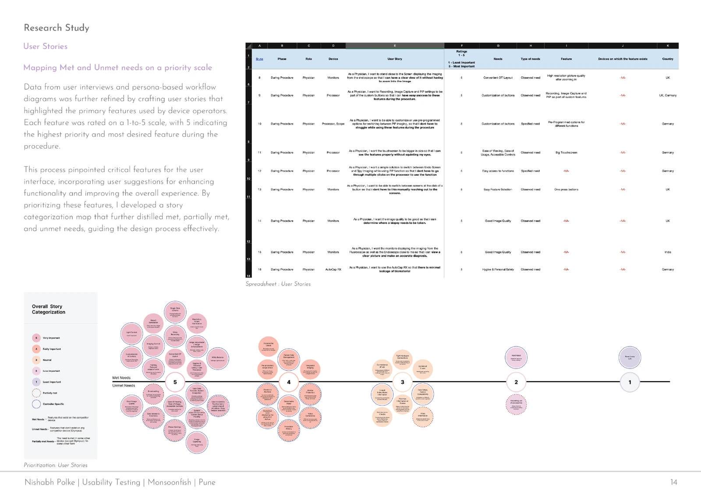
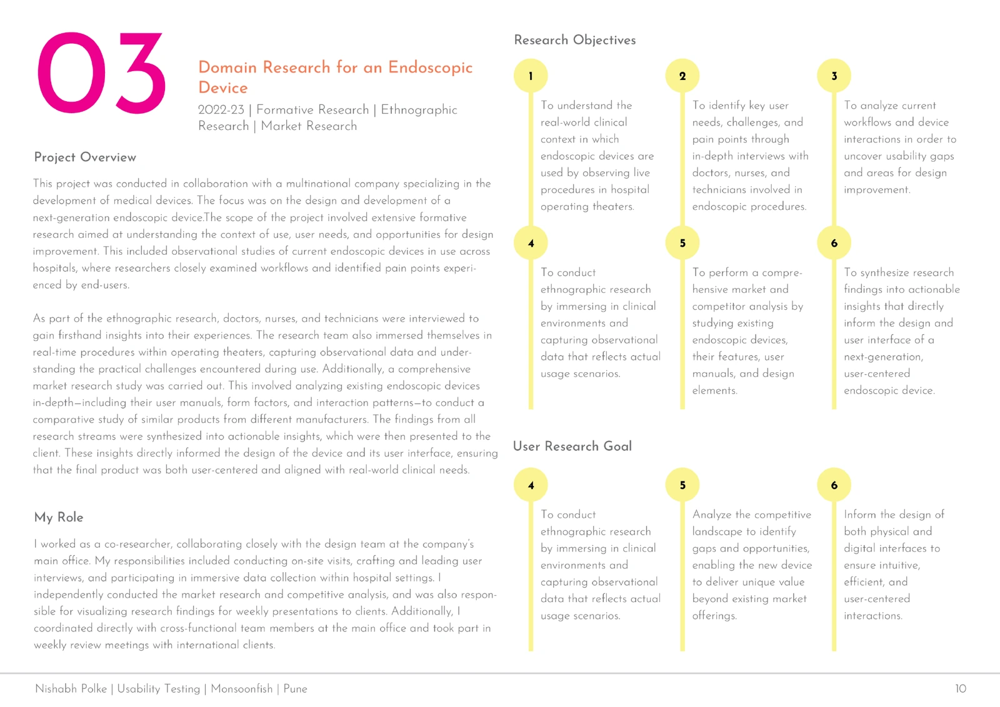
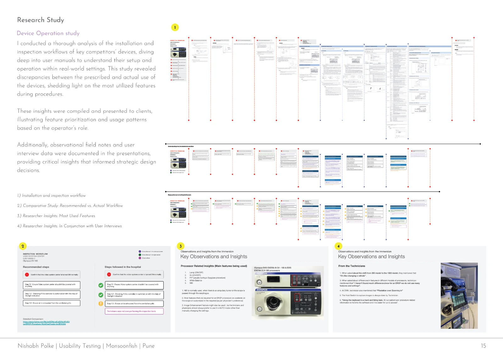
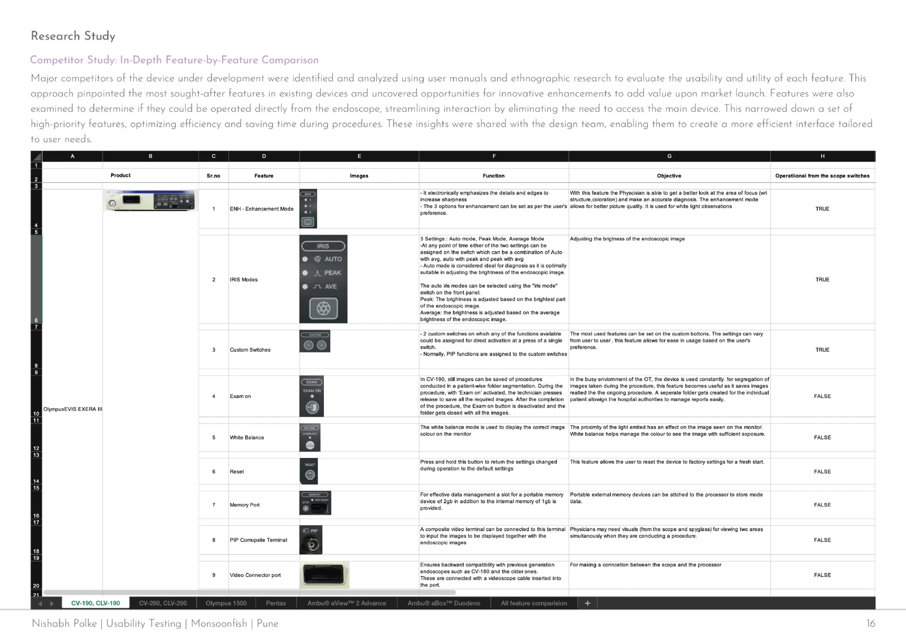

Understanding the clinical workflow.
An endoscope is part of a larger system of people, equipment, and decisions. The research began in that system.
- Project
- Endoscopic-device research
- My role
- Co-researcher
- Context
- Monsoonfish
- Year
- 2022–23

The question
What do clinicians need from an endoscopic device before, during, and after a procedure?
The project supported the development of a new endoscopic device for a multinational medical-device company. Our team studied the context of use, existing workflows, and the needs of physicians, nurses, and technicians.
The work brought together formative research, ethnographic observation, and market research to inform the design of the device and its interface.
My contribution
As a co-researcher, I visited clinical settings, prepared and led interviews, and collected observational data. I independently carried out market and competitor research and visualized findings for weekly client reviews.
Contextual inquiry · Interviews · Workflow analysis
The approach
Observe the whole procedure
With permission, the team visited hospitals and observed procedures in operating theatres. We recorded the arrangement of equipment, device interactions, workarounds, and the roles of people in the room.
Connect interviews to observed work
Semi-structured interviews with doctors, nurses, and technicians added context to the observations. I mapped the procedure from preparation through post-procedure tasks, including variations and interactions with the controller and scope.
Compare existing devices
I studied competing devices, user manuals, specifications, form factors, and interaction patterns. Findings were brought into weekly reviews with the design team and international client stakeholders.






What the research surfaced
A device interaction depends on the phase of work
The workflow map separated pre-procedure, procedure, additional-procedure, and post-procedure activities. It made the moments of interaction with the controller and scope visible alongside people’s responsibilities.
Different roles bring different needs
Observation and interview data were organized into personas and maps of met, partially met, and unmet needs. The maps connected processor, scope, software, and hardware interactions.
Research needed a route into prioritization
I translated findings into user stories and a five-point importance scale. The resulting story map brought the needs and gaps into a form the design team could discuss and prioritize.






Where it led
The documented outputs include a procedure workflow, persona-based needs maps, prioritized user stories, device-operation studies, and competitor comparisons. These were presented to the client to inform physical-device and interface design.
The portfolio does not document a product launch or measured post-launch outcomes. This case study covers the research contribution and its design inputs.
Download the UX portfolioInside the research
Original project documentationExplore the full set of 7 portfolio pages. Select an image to enlarge it, or download the original.
View all 7 research artifacts







